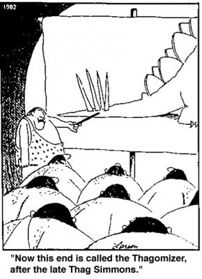

|
April 2009 On Design Minimalism... or, Why JSON Template Doesn't Need an Include Statement ... or, Avoiding the Dinosaur Snaggletooth After introducing JSON Template, the most common feature request was for some kind of include or macro system. The language isn't frozen yet by any means, but it's meant to have a minimal design, while still retaining power. This article includes two detailed examples that show how JSON Template solves the problem of reuse, without any new features. I'll then use this as a general illustration of the principle of design minimalism. Contents
Sample program for reuse on the "outside" Sample program for reuse on the "inside" Functional Programming Now onto Design Minimalism Another example of multiple problems addressed by a single solution Conclusion Two Template Reuse PatternsNotice that an "include" or "macro" system is actually a solution. I want know what problem the solution addresses. And then I can figure out how to solve these problems, without blindly copying what other template systems do. The problem is reuse, or avoiding duplication between template files. This can be broken down into two more specific use cases:
I should note that I'm not only avoiding new features -- I see problems with these "standard" solutions. First, include statements break encapsulation. You've broken up your templates into modules (files), but what about the data dictionary? A lot of web apps seem to have a lot of what are essentially global template variables stuffed into a "servlet base class". Also, if inclusion is implemented by naive textual substitution, then we haven't moved beyond the C preprocessor and its well known problems. I have less experience with the "inheritance" model. But I have dealt with inheritance in specialized languages (as well as in all the popular general purpose languages), and it inevitably suffers from the fragile base class problem. When you can override anything, there's no possibility of hiding data. A change to your "base class" requires you (in theory) to test every page on your site. Anyway, for each of these two problems, I've implemented a small dynamic page that shows how to express the reuse pattern in JSON Template. Sample program for reuse on the "outside"The second case is easier, so we'll start with that: reusing_the_outside.py. The idea is simple:
This involves very little code: A template expansion involes just constructing a dictionary and then a single line of code for the API call. In fact, this
article itself is generated using this method.
The "shell" has substitutions for the Sample program for reuse on the "inside"The first case is shown in reusing_the_inside.py. The idea here is a bit more subtle. We already know how to substitute
variables with the JSON Template's execution model involves a cursor, which is moved by
the names and types of the sections in the template. Usually you expand simple variables under the cursor, but there's no reason you can't expand entire JSON (sub) dictionaries. Just like a variable, the subdictionary is passed to the formatters you specify in the template. We can define our own application-specific formatters. So in this way, we can substitute an entire user profile data dictionary for user profile HTML -- moreover, we can do it multiple times in the same page, with different profiles. Read the example for details. It may seem long, but keep in mind the core of what you have to do to implement this reuse pattern:
def MoreFormatters(formatter_name):
if formatter_name == 'user-profile':
return USER_PROFILE_TEMPLATE.expand
else:
return None # consult default formatters
def TemplateThatCanRenderProfiles(template_str):
return jsontemplate.Template(template_str,
more_formatters=MoreFormatters,
default_formatter='html')
This is such a small amount of code that "folding it into the language" would make your system bigger rather than smaller (accounting for the size of JSON template itself).
If you don't like this extra level of indirection, you can also implement
a straightforward
def MoreFormatters(formatter_name):
if formatter_name.startswith('%'):
filename = formatter_name[1:]
# Put your application-specific template-finding logic here
return jsontemplate.FromFile(open(filename)).expand
else:
return None # consult default formatters
Now you can write panels like this:
... where user-profile.jsont is a template filename. Beautifully
simple, right? JSON Template is meant to be a library and not a framework.
It's small and extensible, in order to allow each person and each application to
use it in the most appropriate way.
Functional Programming
Notice that formatters are quite flexible. HTML escaping (which takes "<" to
This works because formatters are simply pure functions which map JSON nodes to strings -- and TEMPLATES THEMSELVES are also pure functions which map JSON nodes to strings. This is a key point.
In other words, defining a 'Hello {name}'
(
{'name': 'World'}
)
= 'Hello World'
Here we are applying the argument JSON Template is more or less a functional programming language (but don't tell anyone). I will probably expound more on this in a future article. Now onto Design MinimalismDesign philosophies can be characterized along this axis:
This is named after a conversation I had with a former coworker about the good old days of Legos. You had a bunch of blocks, and you combined them in novel ways to build new things. Today you have these prepackaged sets instead, and you can make the cool Jurassic Forest. But to make it, you need the dinosaur snaggletooth Lego piece, and then the Mongol loincloth Lego piece, the Mandolin coke spoon, etc. Using this method means coming up with a specific solution for each specific problem you encounter. Seeing the Perl 6 periodic table of operators gives me this sinking feeling. [2] This method ends up being used a lot because it's easy to copy an existing design, and then add the new features you need for new problems. Copying certainly lets you get things done much faster. But the issue is that you haven't internalized why the copied design chose the solutions it did. You end up with a much larger solution than you would than when starting from first principles.
I'm going to be immodest here and say that I'm surprised that the second ("inside") reuse pattern fell out of JSON Template. I certainly didn't design it with that intent -- only after pondering the include feature pretty hard did this occur to me. I had envisioned formatters as ways to escape variables, just as in Django (with filters) and google-ctemplate. But having a well-defined data model (of JSON), and a well-defined execution model (the cursor traversing a node tree, using a stack), seems to have paid off. Orthogonal designs are the ones that seem to admit unexpective and creative uses. Another example of multiple problems addressed by a single solutionHere is the justification behind what might be seen as another unusual design choice. Problems:
Solution that addresses all three problems:
The grammar of JSON Template is context free, but it has customizable
metacharacters (
This means that a template can be be tokenized by a regular expression. A
single A consequence is that it's easy to write tools like (correct) search/replace tools, checks for correctness or style, the syntax highlighter, maybe template security tools (for escaping), etc.
The If I had used a parser library/framework, I could have used a more complicated grammar and kept implementation the small. But since JSON Template is meant to be implemented in many languages, and every language has a different native parser technology, I avoided this. ConclusionDon't create a dinosaur snaggletooth just to solve the problem you have now. Step back a bit, and see if you address multiple problems with a single solution. Copy solutions where appropriate, but also judiciously avoid bloat. FeedbackPlease send mail to the mailing list or comment on reddit. [1] Both of these are described in the Django Book, under "The Include Template Tag" and "Template Inheritance". [2] Language War Disclaimer: Perl had a lot of great and influential ideas. (OK, but really, does anyone want to learn, much less remember, all that?) [3] google-ctemplate also has customizeable metacharacters, but the grammar isn't context-free because the metacharacters can be changed at any time in the template. Note: I'm not claiming this is a fantastic or original idea -- it's just a design choice, that's all. |
 |